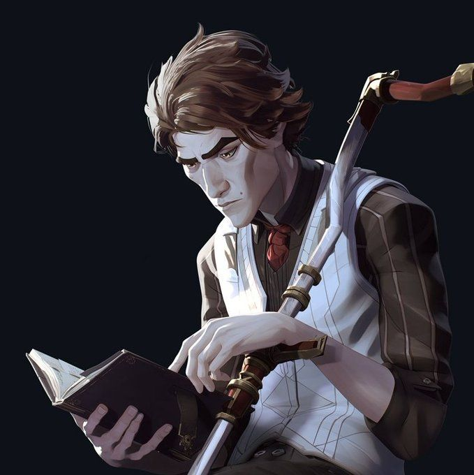

I found myself particularly drawn to the character called Viktor.
Viktor is a scientist who strives to create technology which will help
people. His personality and goals are endearing enough to warrant him
becoming a fan favorite. Early on, he partners with a man called Jayce,
who he works with to create revolutionary technology.
While Viktor is a fan favorite, Jayce is highly debated. He tends to fall to manipulation
and some large pitfalls of capitalism (a concept unpopular with some members
of the fanbase, or at least the ones on Tumblr). I have mixed feelings about
him. Which I can explain in the next page. Either way, below is an image of
what he looks like.